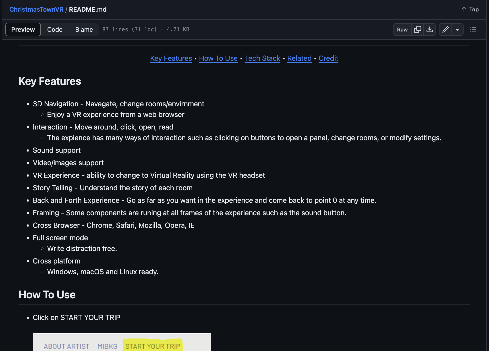
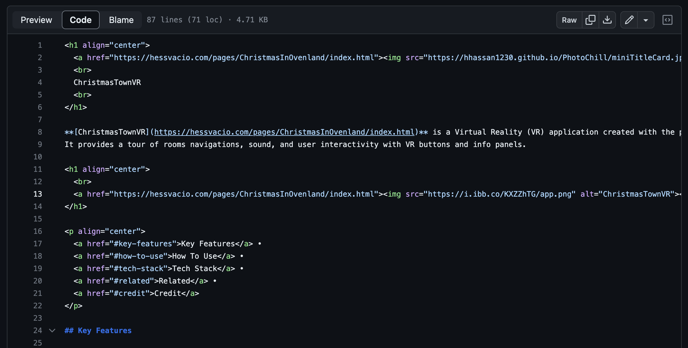

Title & Description
Start with the name of the project at the top. Immediately below, provide a concise description of the project or repository.
Getting Started
Provide step-by-step instructions on how to get the project up and running on a local machine. This might include:
- Prerequisites: Software or tools that need to be installed beforehand.
- Installation: Commands to run, packages to install, or links to download necessary files.
Usage
Describe how to use the project. This might include code snippets, CLI commands, or screenshots. Make sure to explain any terms or jargon that might not be immediately understandable to newcomers.
Contributing
If you want to allow others to contribute:
- Specify the process for submitting pull requests.
- Detail any coding conventions or standards you'd like contributors to adhere to.
License
Indicate the license under which you're releasing your code. This helps clarify how others can use or modify your project. Some popular licenses for open-source projects include MIT, GPL, and Apache 2.0.
Credits/Acknowledgements
Give credit where it's due. If you've used someone else's code or if someone has helped you along the way, acknowledge them here.
FAQs
Anticipate questions that users or contributors might ask and provide answers to them.
Contact Information
Provide an email address, social media link, or other forms of contact so that users can reach out with questions, suggestions, or other feedback.
Visuals
Including screenshots, GIFs, or videos can be extremely beneficial. They can provide clarity, showcase your project's features, or guide users through certain processes.
Code Examples
Include short, Here is illustrative examples of code to help users understand the project's capabilities and how to use it.
Tips:
- Keep it Updated: As your project evolves, your README should as well. Make sure the installation instructions, usage examples, etc., reflect the current state of the project. 
- Be Clear and Concise: A README should be informative, but it shouldn't be overly verbose. Aim to be as clear and direct as possible.
- Use Markdown Effectively: Take advantage of markdown's formatting options (like headers, lists, and links) to make your README easy to read and navigate. 
- Engage the Reader: Your README is an opportunity to make a strong first impression. Use a friendly tone, and aim to engage your reader.
Remember, the goal of a README is to get someone new to your project up to speed as quickly as possible. The more straightforward and clearer you can make it, the better.